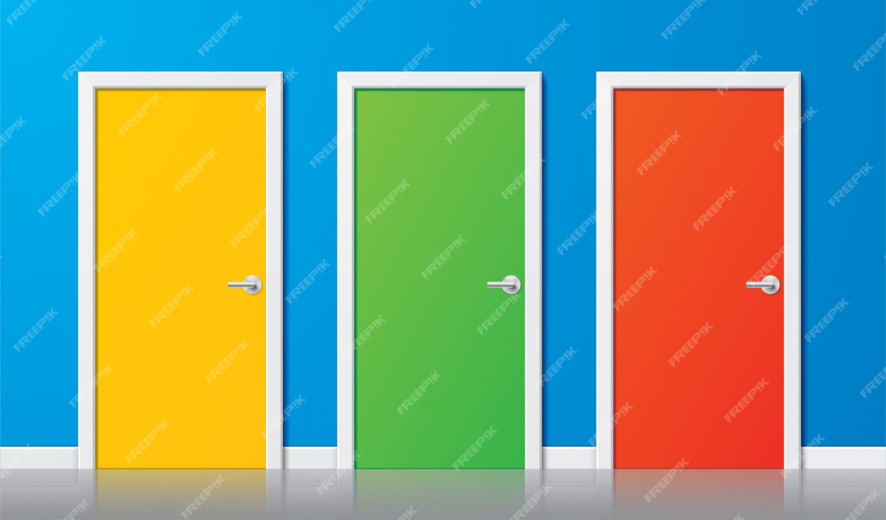

As you approach the city, you hear creepy whistling noises, and you see rubish being thrown around in the wind.
You are now walking into the city, you are walking towards a tall building to catch your breath!
There will be two options on the screen..
To your right is the option to
To your left is the option to
... What should you choose? 